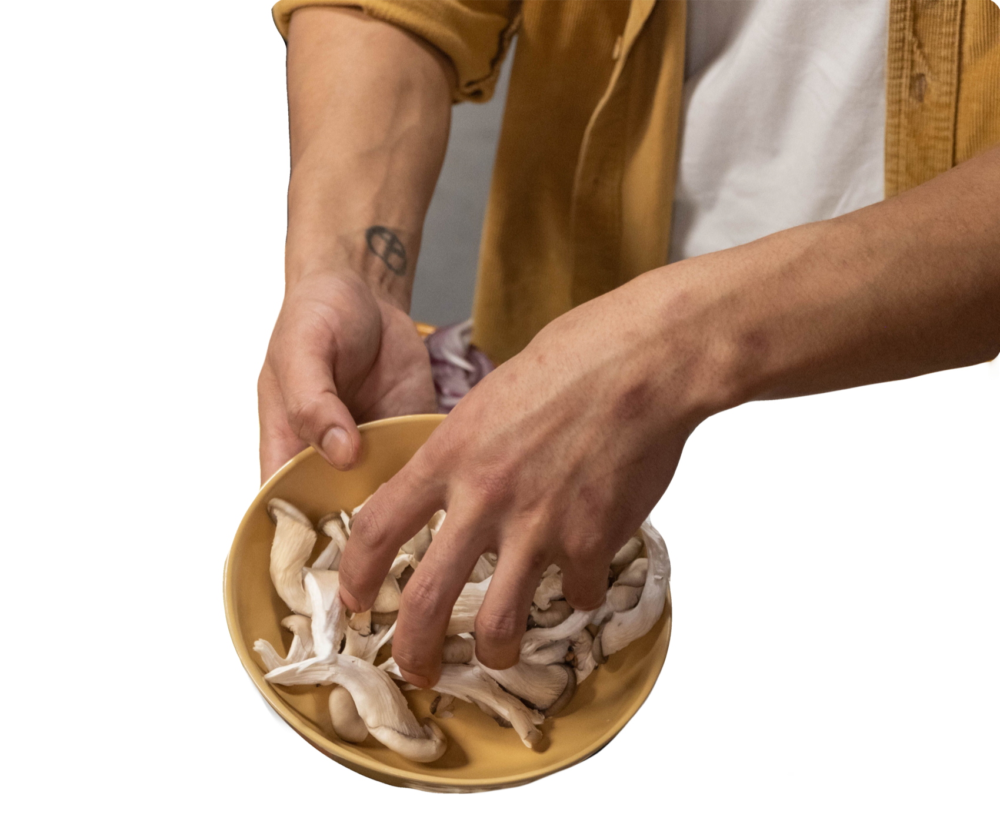
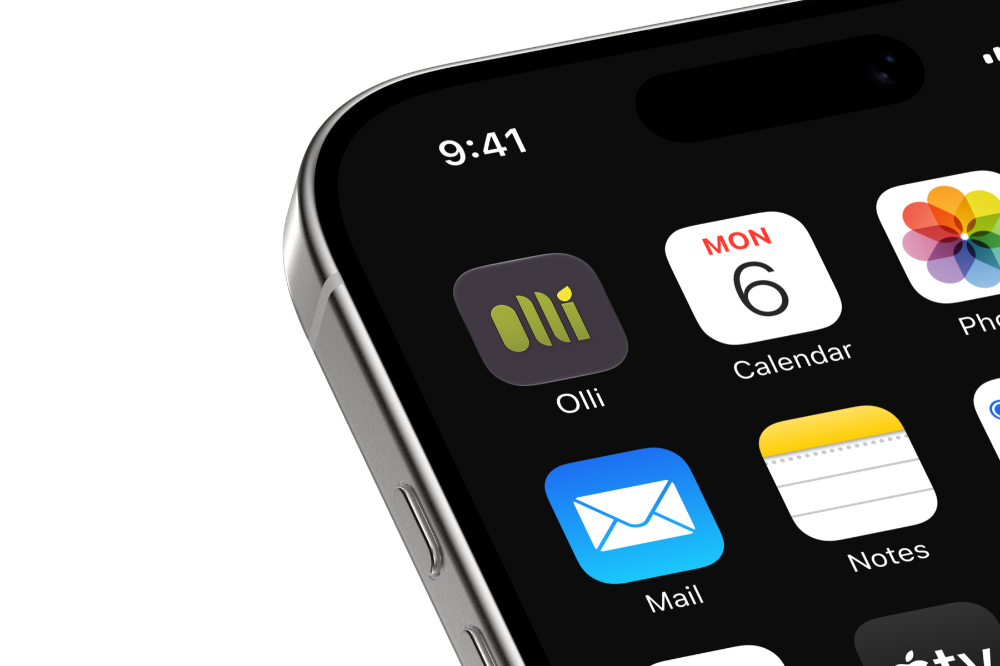
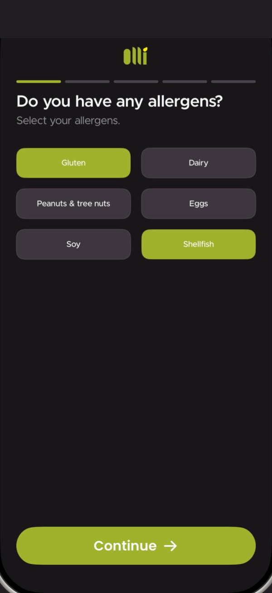
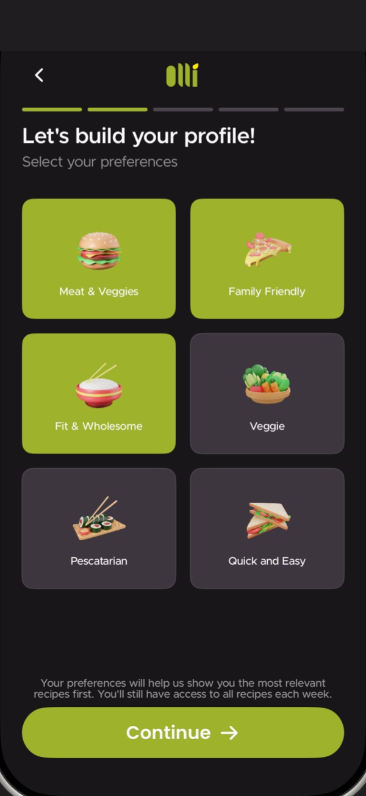
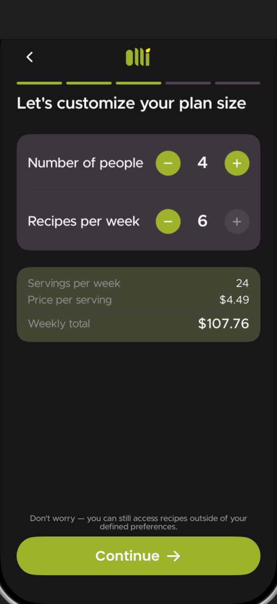
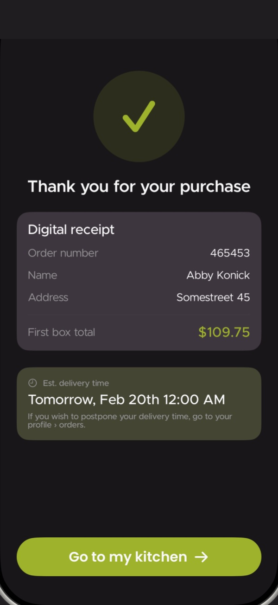
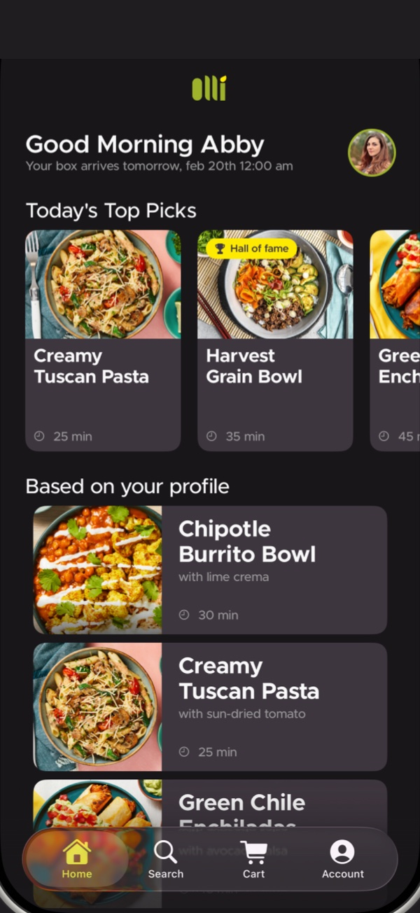
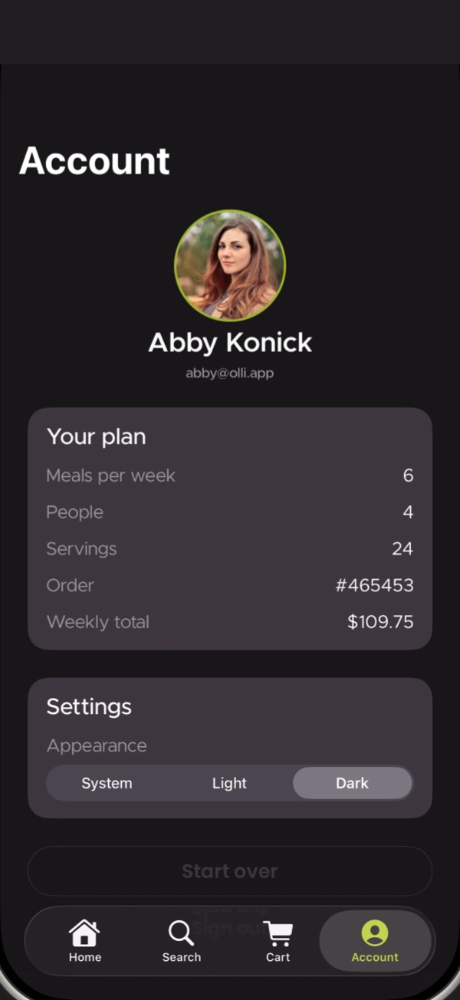

01 / 05
Logo
Four rounded strokes and a leaf for the dot of the i. Avocado on Jet as standard, a single colour where it has to be, and the app icon.
Primary
On light
One colour
App icon


Olli is a meal subscription service built around the idea that cooking should feel like a choice, not a chore. Users browse a curated selection of recipes, pick what they want to make that week, and the exact ingredients arrive at their door — nothing more, nothing wasted.
The app goes beyond delivery. Each recipe comes with a step-by-step cooking tutorial built directly into the interface — timed, visual, and designed to guide you through the process without ever leaving the app.
The design challenge was building something that felt warm and approachable without losing the clean confidence of a premium product. The result is an interface that respects your time and makes the kitchen feel less intimidating.
A complete design system — brand, colour, type, grid and an 86-component library across twelve Figma pages — translated into a running iOS app, every value read from the source file.
The path a new user takes, in the SwiftUI build. Each step asks one thing and shows how far along you are. Scroll, and the phone taps through it.
Onboarding starts with what you can't eat: tap your allergens once and they're kept out of every week.
Then how you like to eat — Meat & Veggies, Family Friendly, Fit & Wholesome, Veggie, Pescatarian, Quick and Easy. The feed leads with what you pick.
People and recipes per week, each with a − and a +. Servings, price per serving and the weekly total update as you go.
No surprises: the receipt shows what you paid and exactly when the box arrives.
Home greets you by name, says when the box lands, and leads with this week's top picks and recipes chosen for your profile.
Your plan, your orders and the app's appearance — system, light or dark — on one screen, behind iOS's own Liquid Glass tab bar.





